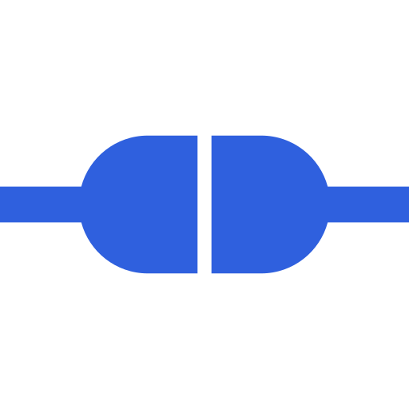
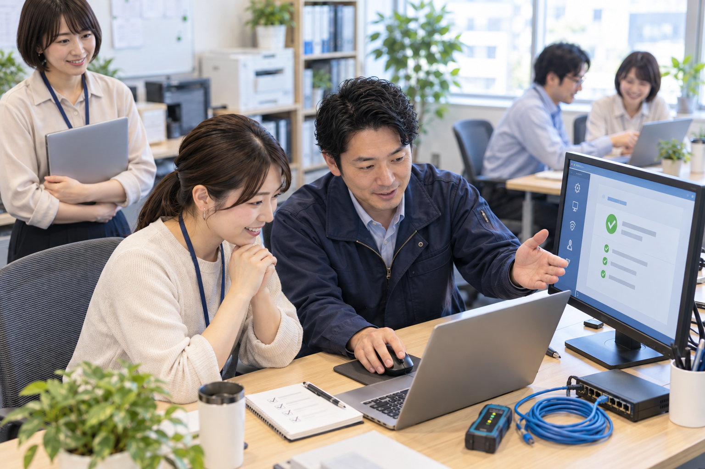
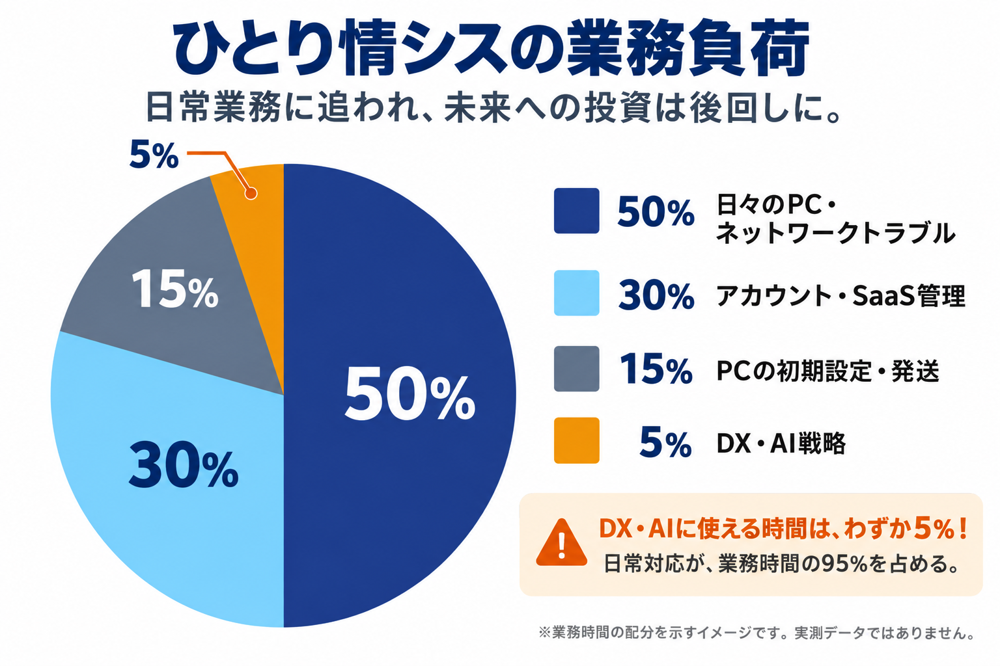
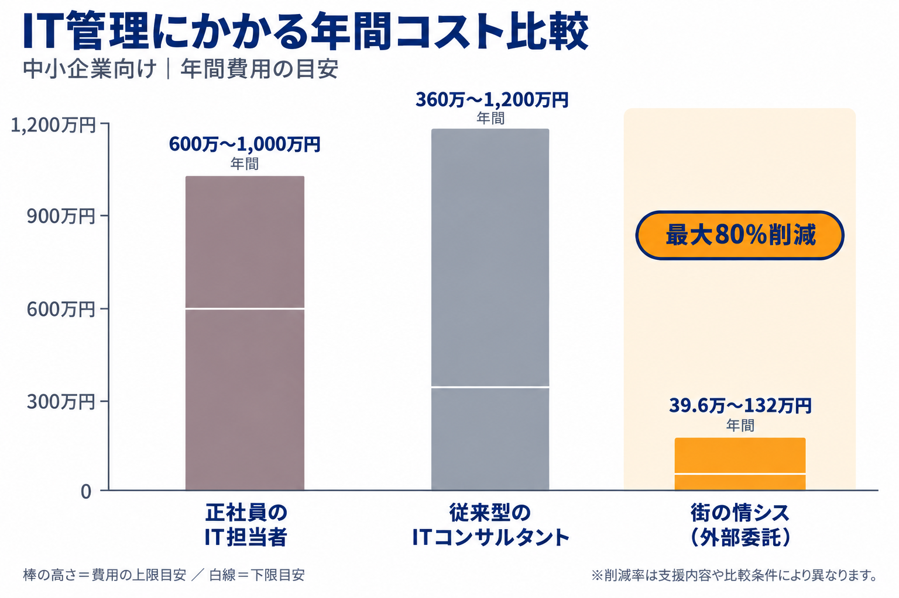
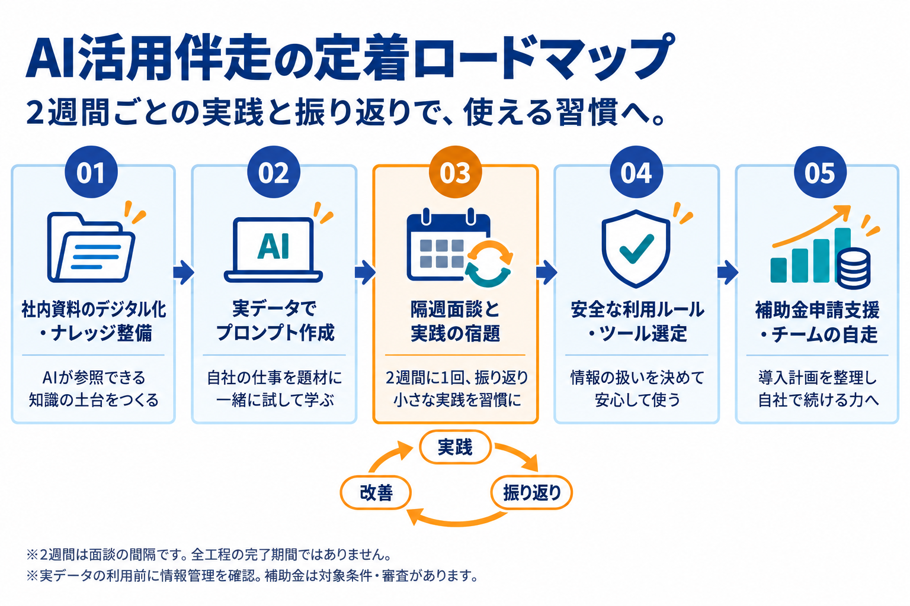

01
実務代行
その作業、
私たちが引き受けます。
PCの初期設定、アカウントの発行・削除、トラブルの切り分け。提案で終わらず、泥臭い現場作業まで手を動かします。

中小企業のための IT実務代行 × AI伴走まとまっていないお悩みも、そのままお聞かせください。

ITのことも、これからのAIのことも。
突発的なPC・ネットトラブルで本業が中断される
「ひとり情シス」が孤立し、退職時のブラックボックス化が怖い
IT顧問を頼んだがアドバイスだけで作業はしてくれない
正社員を採用すると年600万〜1,000万円もかかり雇えない
YOU DON'T HAVE TO DO IT ALONE
「詳しいから」と任されたIT業務。
気づけば、誰にも相談できない仕事になっていませんか。
突然のトラブル、終わらない問い合わせ、休みの日の連絡。
それは、あなたの頑張りが足りないからではありません。
私たちは、担当者の「もうひとりの仲間」に。
目の前の作業も、属人化した運用も、一緒にほどいていきます。

OUR SOLUTION
むずかしい話より、今日の「助かった」をひとつずつ。
実務代行
PCの初期設定、アカウントの発行・削除、トラブルの切り分け。提案で終わらず、泥臭い現場作業まで手を動かします。
上から目線ゼロ
専門用語を並べず、わかる言葉でご説明。現場の事情や今のやり方を大切にしながら、無理なく続く方法を一緒に考えます。
AI伴走定着
自社のリアルな資料を使って、一緒に実践。2週間に1回の面談と小さな宿題で、AIが日々の業務に根づくリズムをつくります。
SIMPLE PRICING
採用の前に、もうひとつの選択肢。
会社の規模とお困りごとに合わせて選べます。

※比較金額は本ページの想定条件による目安です。業務範囲や契約条件により異なります。街の情シスは各月額料金×12か月で算出しています。
LIGHT
まずは日常の「困った」から
1〜10名の企業様向け
STANDARD
IT運用を整えて、AIの第一歩へ
10〜30名の企業様向け
PREMIUM
運用改善も、AI定着もまるごと
20〜50名の企業様向け
※表示価格の税込・税別区分、訪問対応・交通費・時間超過時の費用は、お申し込み前にお見積もりでご確認ください。
AI PARTNER PROGRAM
あなたの会社の仕事で、試す。小さく続けて、使いこなす。
2週間ごとの実践と振り返りで、成果につながるところまで一緒に。
実務OJT・定例伴走はプレミアムで対応。内容や進め方は課題に合わせて調整します。

IS THIS FOR YOU?
大きな仕組みより、
今の会社にちょうどいいITを。
LET'S TALK ABOUT YOUR IT.
「何から手をつければいい？」も大丈夫。
今のお困りごとをお聞きし、最初の一歩を一緒に整理します。
オンラインで30分 ／ ご相談無料 ／ 課題が整理できていなくてもOK